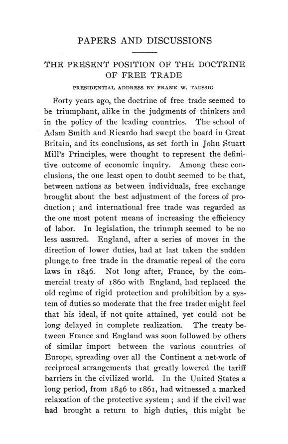

Chicago, 1904: livre comércio, teoria dos preços e oficina aberta
Leitura: 7 min
Chicago, dezembro de 1904: Taussig reexamina o livre comércio diante da onda protecionista, Laughlin e Andrew divergem sobre moeda e crédito, e quatro autores discutem a oficina aberta.


Na noite de quarta-feira, 28 de dezembro de 1904, na Chicago Historical Society, Frank W. Taussig, de Harvard, subiu à tribuna para o discurso presidencial da American Economic Association, numa sessão conjunta com a American Historical Association. Começou pelo contraste com a geração anterior:
“Há quarenta anos, a doutrina do livre comércio parecia triunfante.” (“Forty years ago, the doctrine of free trade seemed to be triumphant”)
A décima sétima reunião anual se realizou em Chicago de 28 a 30 de dezembro de 1904, sob os auspícios da University of Chicago, ao mesmo tempo que as reuniões da American Historical Association e da American Political Science Association. O programa teve sete sessões: a abertura conjunta, com boas-vindas de William R. Harper; os discursos presidenciais; teoria da moeda; oficina aberta ou fechada; corporações e ferrovias; tarifas preferenciais e reciprocidade; e história econômica. Este número reúne parte dos trabalhos; os anais saíram em fevereiro de 1905 como nº 1 do vol. 6 da terceira série.
O que restava da doutrina do livre comércio?
Taussig registrou a virada: depois da revogação das Corn Laws em 1846 e do tratado franco-inglês de 1860, vieram a tarifa alemã de 1879, o fim do regime de tratados na França em 1881 e a consolidação da proteção nos Estados Unidos. Rejeitou os argumentos populares, como o de que a proteção explica os salários americanos, que atribuiu à produtividade do trabalho e aos recursos naturais. Admitiu casos difíceis, como o dumping temporário e a proteção à indústria nascente, e concluiu que o princípio continuava de pé, mas que sua aplicação exigia pesar razões contrárias.
A quantidade de moeda governa os preços?
Na manhã de quinta-feira, J. Laurence Laughlin, da University of Chicago, separou o padrão, a mercadoria em que os preços são expressos, dos meios de troca, como notas, cheques e depósitos. Para ele, o preço se forma antes da troca, pelos custos e pela demanda, e os meios de pagamento apenas registram o resultado:
“os meios de troca são uma consequência, não uma causa” (“the media of exchange are a consequence, not a cause”)
David Kinley, da University of Illinois, tratou o crédito bancário como uma alavanca apoiada nas reservas: a moeda-padrão se divide entre reservas e pagamentos diretos, e o crédito permite atender a um volume maior de trocas com menor alteração de preços. A. Piatt Andrew, de Harvard, sustentou que o crédito só substitui a moeda em formas transferíveis, notas e depósitos, e rejeitou a tese de que o crédito bancário seria limitado apenas pelo valor dos bens dos tomadores, citando trechos de Laughlin.
Oficina sindical ou oficina aberta?
À tarde, o tema foi a oficina aberta. John R. Commons, da University of Wisconsin, explicou a política da oficina sindical pela estrutura de cada indústria e pela capacidade das associações patronais de fazer cumprir acordos. John Graham Brooks a defendeu como exigência prática em certos lugares e épocas, não como princípio. John D. Hibbard, empregador de Chicago, expôs objeções colhidas entre industriais metalúrgicos e propôs a “verdadeira oficina aberta”; Thomas Kidd, dos marceneiros, respondeu em nome do sindicalismo. Na discussão, Seager resumiu um ponto:
“não tanto a oficina fechada quanto o sindicato fechado” (“not the closed shop so much as the closed union”)
Que decisões a associação tomou?
O conselho reelegeu Taussig presidente para 1905, manteve Frank A. Fetter como secretário e tesoureiro e marcou a reunião seguinte para Baltimore. A comissão de publicações, presidida por Jacob H. Hollander, relatou que uma consulta a 22 sócios sobre cooperar com o Quarterly Journal of Economics não despertou entusiasmo; o conselho declarou desejável que a associação tivesse revista própria e autorizou a comissão executiva a criá-la, se houvesse meios financeiros. A American Economic Review começaria em 1911.
O volume termina com o relatório de progresso da comissão sobre a situação econômica da população negra, assinado por Walter F. Willcox, W. E. B. Du Bois, H. T. Newcomb, W. Z. Ripley e A. H. Stone, que estimou, a partir do censo de 1900, as ocupações que sustentavam as famílias negras e a riqueza acumulada.
Na minha leitura
Na minha leitura, o ponto metodológico mais útil do volume está no fecho de Taussig: a distinção entre princípio e aplicação. O livre comércio aparece como presunção, não como dogma; quem propõe a restrição carrega o ônus da prova, e mesmo quando ela se justifica, por receita, transição ou interesses constituídos, deve ser tratada como custo a compensar, não como ganho. Também vale a cautela empírica que ele aplica à indústria nascente: sem isolar causas, um setor que cresceu sob tarifa não prova que cresceu por causa da tarifa. O exemplo do crescimento industrial da região central do país, sob livre comércio interno total, funciona como contraprova.
A sessão monetária expõe um conflito que nunca foi inteiramente resolvido: se a moeda bancária se ajusta passivamente às trocas, como quer Laughlin, ou se tem um limite próprio, dado pelas reservas e pela fração de cheques convertida em dinheiro, como argumenta Andrew. O argumento de Andrew é o mais rigoroso do debate: se o crédito se expande com o valor dos bens, e o valor dos bens sobe com o crédito, o limite é circular e não limita nada. Já na sessão trabalhista, Commons oferece o enquadramento mais analítico, ao mostrar que a mesma regra de contratação produz efeitos diferentes conforme o número de pequenos empreiteiros e a capacidade de fazer cumprir os acordos.
Glossário
- Indústria nascente
- argumento de que uma tarifa temporária permite a um setor novo ganhar escala e depois competir sem proteção.
- Dumping
- na definição de Taussig, venda de bens no exterior abaixo do preço normal.
- Custo primário (prime cost)
- termo de Marshall para o custo direto mínimo que uma venda precisa cobrir.
- Padrão e meios de troca
- distinção de Laughlin entre a mercadoria em que os preços são expressos (o ouro) e os instrumentos usados para pagar.
- Moeda-depósito
- depósitos bancários movimentados por cheque, usados como meio de pagamento.
- Teoria quantitativa
- tese de que o nível de preços varia com a quantidade de moeda em circulação.
- Oficina fechada, aberta e sindical
- na proposta de Commons: fechada por contrato aos não sindicalizados; aberta quando o patrão é livre para contratar; sindical quando, de fato, só há sindicalizados.
- Acordo coletivo
- contrato entre sindicato e empregador ou associação patronal sobre salários, jornada e regras de trabalho.
Artigos desta edição
- American Economic Association — Apresentação da associação (pp. 1–2). Nota sobre os fins da associação, as reuniões conjuntas com a American Historical Association, as séries de publicações desde março de 1886 e o anúncio da reunião de 1905 em Baltimore e Washington. JSTOR
- Constitution — Estatuto e dirigentes (pp. 3–11). Estatuto (anuidade de três dólares, sócio vitalício por cinquenta), regimento e relação de dirigentes e membros do conselho. JSTOR
- Minutes of the Council Meeting — Atas do conselho (pp. 12–17). Reuniões de 28 e 29 de dezembro de 1904: relatórios do secretário e do tesoureiro, eleição de Taussig para 1905, escolha de Baltimore e resolução favorável a uma revista da associação. JSTOR
- The Seventeenth Annual Meeting — Programa da reunião (pp. 18–20). Programa das sete sessões de 28 a 30 de dezembro de 1904, com locais, trabalhos e debatedores. JSTOR
- Report of the Publication Committee — Jacob H. Hollander, presidente da comissão de publicações (pp. 21–25). Balanço do vol. 5, lista anual de teses em andamento, bibliografia sobre teoria dos salários, consulta sem entusiasmo sobre cooperação com o Quarterly Journal of Economics e recomendação de uma revista própria. JSTOR
- Address of Welcome — William R. Harper (presidente da University of Chicago) (pp. 26–28). Boas-vindas às três associações, com a lembrança de que todo edifício de Chicago fora erguido durante a vida de moradores ainda vivos. JSTOR
- The Present Position of the Doctrine of Free Trade — Frank W. Taussig (Harvard University); discurso presidencial (pp. 29–65). Taussig parte da reversão protecionista desde 1860 e rejeita os argumentos populares: a visão mercantilista de exportações e importações, o mercado interno e a ideia de que a proteção explica os salários americanos, que atribui à produtividade e aos recursos naturais. Aceita restringir o dumping quando é temporário, como nos prêmios europeus à exportação de açúcar, e trata a indústria nascente como questão empírica, com evidência mista para França, Alemanha e Estados Unidos. Sustenta que os efeitos das tarifas costumam ser superestimados e que a proteção se mantém por agricultura, nacionalismo e hábito. Conclui que o livre comércio é presunção: restrições precisam provar seu caso. JSTOR
- A Theory of Prices — J. Laurence Laughlin (University of Chicago) (pp. 66–83). Laughlin define preço como a quantidade da mercadoria-padrão, o ouro, pela qual um bem se troca, e separa o padrão dos meios de troca. O nível de preços resulta de forças dos dois lados da relação: oferta e demanda de ouro e custos de produção dos bens. Como o estoque de ouro é grande, variações anuais pesam pouco. Os meios de troca surgem depois de formado o preço, e a moeda-depósito se expande na proporção das transações. Aponta queda de cerca de 20% nos preços desde 1879, apesar de mais ouro, e encerra com doze perguntas sobre a teoria quantitativa. JSTOR
- The Relation of the Credit System to the Value of Money — David Kinley (University of Illinois) (pp. 84–94). Kinley analisa como a sociedade reparte as trocas entre escambo, moeda e crédito, pelo meio mais barato disponível. O dinheiro mantido como reserva bancária presta o mesmo serviço do dinheiro em circulação, mas de forma mais eficiente, como uma alavanca. Quando cresce o volume de trocas, a moeda se redistribui entre reservas e pagamentos diretos, e o crédito permite acomodar o aumento com menor alteração de preços. Conclui, em seis pontos, que quanto mais refinado o sistema de crédito, menos moeda é necessária para dado volume de comércio, e que, com grande capital fixo, o crédito tende a deprimir o nível de preços. JSTOR
- Credit and the Value of Money — A. Piatt Andrew (Harvard University) (pp. 95–115). Andrew sustenta que a quantidade de moeda, a velocidade de circulação e o volume de negócios continuam sendo fatores do valor da moeda, ainda que seus efeitos muitas vezes se compensem. Separa as formas de crédito: só as transferíveis, notas e depósitos movimentados por cheque, substituem a moeda; o crédito em conta e outros adiamentos de pagamento só elevam os preços temporariamente. Rejeita a tese de que o crédito bancário seria limitado pelo valor dos bens dos tomadores, que atribui a Laughlin entre outros: como preços e crédito se alimentam, esse limite seria impossível. O limite real está nas reservas e na fração de cheques apresentada para pagamento em dinheiro. JSTOR
- Discussion on Papers of Laughlin, Kinley and Andrew on the Theory of Money — William A. Scott, Irving Fisher, Thomas N. Carver, Henry R. Seager, J. Laurence Laughlin, Henry B. Gardner, William W. Folwell, Frederick R. Clow e David Kinley (pp. 116–139). Scott apoia a distinção de Laughlin e contesta Kinley sobre reservas; Fisher separa utilidade marginal e poder de compra da moeda; Carver discute se o crédito barateia o ouro; Seager, Laughlin e Kinley respondem. JSTOR
- Causes of the Union-Shop Policy — John R. Commons (University of Wisconsin) (pp. 140–159). Commons apresenta a oficina sindical como a “tarifa” que os trabalhadores impuseram a si mesmos, num país que protegia produtos mas recebia trabalhadores imigrantes. Propõe distinguir oficina fechada, aberta e sindical e identifica três condições para acordos de oficina aberta duradouros: associações fortes dos dois lados, a mesma escala salarial para sindicalizados e não sindicalizados e queixas decididas em conferência conjunta. Onde há muitos pequenos empreiteiros, como na construção e no vestuário, a oficina aberta não sobrevive; em ferrovias e no serviço público, é dispensável. Conclui que associações patronais e sindicatos se contêm mutuamente, como num sistema de pesos e contrapesos. JSTOR
- The Issue between the Open and Closed Shop — John Graham Brooks (presidente da American Social Science Association) (pp. 160–177). Brooks observa que oficinas fechadas e abertas variam tanto entre si que a definição contratual pouco ajuda, e adota um critério prático. Admite que a oficina fechada deve ser defendida como exigência de tempo e lugar, não como princípio, e que pode custar caro ao consumidor. Sustenta que os sindicatos erraram ao defender abertamente o contrato de exclusão, em vez de defender a negociação coletiva, e que a oficina aberta, nas mãos de associações hostis, pode ser tão nociva quanto a pior oficina fechada. Cita os charuteiros de Boston, com taxa de admissão baixa e jornada de oito horas, e pede suspensão de juízo. JSTOR
- The Necessity of an Open Shop-An Employer's View — John D. Hibbard (John Davis Co.; presidente da Chicago Metal Trades Association) (pp. 178–194). Com base em uma circular enviada a empregadores da Chicago Metal Trades Association, Hibbard distingue quatro tipos de oficina: a fechada pelo sindicato, a fechada aos sindicalizados, a oficina aberta comum e a “verdadeira oficina aberta”. Contra a primeira, cita decisões judiciais sobre monopólio e alega que o salário mínimo sindical nivela o trabalhador mais capaz pelo menos produtivo. Rejeita também a oficina fechada aos sindicalizados, salvo como medida de guerra. Admite que a negociação coletiva deve prevalecer, mas avalia que nenhum dos lados está pronto para ela, e deposita a esperança na oficina aberta verdadeira. JSTOR
- The Open Shop Versus Trades Unionism — Thomas Kidd (secretário-geral da Amalgamated Woodworkers) (pp. 195–199). Kidd apresenta a luta sindical como continuação da luta histórica do trabalho por liberdade. Atribui a limitação da produção ao uso patronal do “marcador de ritmo”, um operário rápido pago para acelerar os demais, e defende regras de aprendizagem como proteção contra a troca de homens por meninos. Sustenta que a escala sindical põe todos os empregadores em pé de igualdade e que a oficina aberta levaria a greves sucessivas. Conclui que nem o empregador nem o sindicato devem ter poder absoluto. JSTOR
- Discussion on Papers of Commons, Brooks, Hibbard, and Kidd on the Open or Closed Shop — Edward A. Ross, Towner K. Webster, George E. Barnett e Henry R. Seager (pp. 200–215). Ross argumenta que, sem negociação conjunta, o trabalho é mal pago; Webster, industrial, defende a “oficina de contrato”; Barnett separa a uniformidade das regras de oficina; Seager propõe regular o sindicato fechado e aceitar a oficina sindical aberta a todos. JSTOR
- The Economic Position of the American Negro — Walter F. Willcox, W. E. B. Du Bois, H. T. Newcomb, W. Z. Ripley e A. H. Stone (comissão especial) (pp. 216–221). Relatório de progresso que usa o censo de 1900 para estimar quantas famílias negras dependiam de cada ocupação, com hipóteses explicitadas, como a de que a renda familiar vinha sobretudo dos homens de 16 anos ou mais. Estima 1.833.759 famílias, 72,8% sustentadas principalmente pela agricultura, que a comissão considera estimativa máxima. Partindo dos dados agrícolas do censo e do patrimônio das igrejas, avalia a riqueza acumulada da população negra em 1900 em cerca de US$ 300 milhões, provavelmente entre US$ 250 milhões e US$ 350 milhões. JSTOR
Fontes
- American Economic Association (pp. 1–2). JSTOR · Internet Archive (PDF)
- Constitution (pp. 3–11). JSTOR · Internet Archive (PDF)
- Minutes of the Council Meeting (pp. 12–17). JSTOR · Internet Archive (PDF)
- The Seventeenth Annual Meeting (pp. 18–20). JSTOR · Internet Archive (PDF)
- Report of the Publication Committee Submitted to the Council of the American Economic Association, at the Seventeenth Annual Meeting Held at Chicago, December 28-30, 1904 (pp. 21–25). JSTOR · Internet Archive (PDF)
- Address of Welcome (pp. 26–28). JSTOR · Internet Archive (PDF)
- The Present Position of the Doctrine of Free Trade (pp. 29–65). JSTOR · Internet Archive (PDF)
- A Theory of Prices (pp. 66–83). JSTOR · Internet Archive (PDF)
- The Relation of the Credit System to the Value of Money (pp. 84–94). JSTOR · Internet Archive (PDF)
- Credit and the Value of Money (pp. 95–115). JSTOR · Internet Archive (PDF)
- Discussion on Papers of Laughlin, Kinley and Andrew on the Theory of Money (pp. 116–139). JSTOR · Internet Archive (PDF)
- Causes of the Union-Shop Policy (pp. 140–159). JSTOR · Internet Archive (PDF)
- The Issue between the Open and Closed Shop (pp. 160–177). JSTOR · Internet Archive (PDF)
- The Necessity of an Open Shop-An Employer's View (pp. 178–194). JSTOR · Internet Archive (PDF)
- The Open Shop Versus Trades Unionism (pp. 195–199). JSTOR · Internet Archive (PDF)
- Discussion on Papers of Commons, Brooks, Hibbard, and Kidd on the Open or Closed Shop (pp. 200–215). JSTOR · Internet Archive (PDF)
- The Economic Position of the American Negro (pp. 216–221). JSTOR · Internet Archive (PDF)
- Sumário da edição no JSTOR: Publications of the American Economic Association, 3ª série, vol. 6, nº 1.
Documento em domínio público (EUA, publicado antes de 1931), via JSTOR Early Journal Content e Internet Archive. Resumo e comentário do autor deste site, sem afiliação com a American Economic Association. Encontrou um erro? Escreva: a correção é publicada no próprio texto, com data.
← Nº 72 · Quaintance, 1904: a máquina que tirou o trabalhador do campo Nº 74 · Chicago, 1904 (II): trustes, ferrovias e preferência imperial →